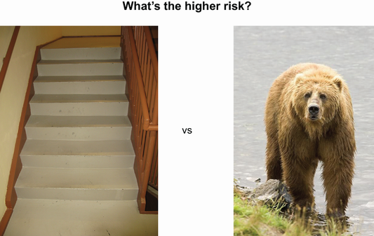
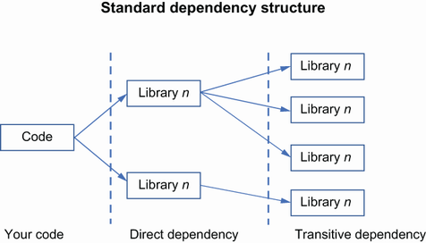
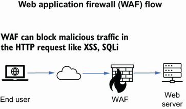

3 Components of application security
Part 2. Developing the application security program
10h 2m remaining
3 Components of application security
Discovering security analysis tools used in the development pipeline
Exploring protection tools available for running applications
Explaining vulnerability collection, correlation, and prioritization
Looking at Bug Bounty and Vulnerability Disclosure programs
So, you have seen the issues that are caused by not having application security integrated into your life cycle and you’re starting to ask the great question of where to start. There is not a one-size-fits-all package that works for all organizations. A lot depends on the following:
The industry and the regulations impacting the organization
The culture of the organization
The security budget at the organization
It’s often easy to overlook the organization’s culture having an impact on the effectiveness of the application security being applied, but this is a huge component. You cannot effect change if the engineering organization and the broader organization does not want to be more secure or is passive about security. Building security into the development life cycle depends on the organization’s ability to rally its engineers to the cause. But people in the organization can only do so much on their own. Providing the right tools and processes is critical to successful application security. In this chapter, I discuss several of the more common tools and processes that make up a successful application security program. This is by no means an exhaustive list, and new tools and novel ways of solving application security issues are coming each year. However, the basic tools and processes are outlined here to give you an understanding of where it fits in the overall application security picture.
There are many books that have been written on threat modeling. The intention of this section is to familiarize you with the different techniques and tools that are used to perform a threat model.
Definition Threat modeling is a structured approach to identify, quantify, and address the security threats and risks associated with an application. It is an investigative technique used for identifying application security risks/hazards that are technical (and even implementation specific). Threat modeling is an early-stage activity that is used to define security requirements for a design. Ideally, threat modeling would occur during the initial stages of the architecture development.
Threat modeling is one of the most fundamental parts of security. It is not just a specific part of application security but is used in all parts of engineering and security, including in networking and operational teams. It can be as simple as asking a question like, “What could happen if a malicious user does this?” and can be as elaborate as gathering the appropriate subject matter experts to review a complex architecture with clear action items and takeaways with a list of associated risks and vulnerabilities.
Note Some additional reading that is helpful with threat modeling is Threat Modeling: Designing for Security by Adam Shostack (Wiley, 2014; http://mng.bz/gRrV) and the Threat Modeling Manifesto (www.threatmodelingmanifesto.org/).
The purpose of threat modeling is to identify the potential threats that might impact a system or architecture and define the countermeasure that can be used to address the found risks. This activity should be completed as early in the development life cycle as possible, as shown in figure 3.1. As I mentioned, it can be as simple as just asking what could happen, but more complex architecture needs more attention. Most modern architecture includes multiple external connections that are coming in and going out of the application. It may also have reusable components from other internal applications within the organizations. This represents a large set of moving parts that are often changing and present a unique challenge when completing a threat model, as the attack surface is much larger than a simpler architecture. For these more complex architectures, there are tools that can be used such as blockatecture tools like Microsoft Visio or another graphical tool that allows you to drag and drop blocks down on a canvas and draw lines. There are also specialized commercial tools that can be used to not only draw the architecture, but to also help identify the risks that can impact the drawn architecture. One of the most comprehensive methods of threat modeling is more manual and requires time and resources to spend the effort to whiteboard the architecture and manually identify the risks. Each of these methods have their strengths and weaknesses.

Figure 3.1 Threat modeling in the secure SDLC
Before we get into actually performing a threat model, you need to know a few terms that are used during the process:
Attacker—Those who intentionally or unintentionally misuse an element of the system under consideration. This could be one of the threat actors I spoke of earlier, like a script kiddie, hacktivist, or others.
Asset—Anything you deem to have value and something that the system must protect from an attacker. Some physical examples are money and precious metals. Digital examples are data, especially sensitive data like protected health information or personally identifiable information.
Threat—A means by which an attacker might compromise an asset that has potential for success. Threats can include everything from hackers and malware, to earthquakes and wars. Additionally, intention is not a factor when considering threats. A mechanical failure of a hard drive in a data center is an equal threat to a coordinated attack by an attacker.
Risk—The potential for loss, damage, or destruction of an asset as a result of a threat exploiting a vulnerability. In the previous example about the mechanical failure of a hard drive and an attack by an attacker, the mechanical failure is a lower overall risk since there is usually redundancy built into an architecture to manage a failure, meaning the impact is smaller.
When you want to understand risk and threats, it’s important to ensure that you take emotion and gut feeling out of the equation. Take the two visuals in figure 3.2. Many people have a very visceral reaction to the bear and view the stairs as just another daily activity, but what are the actual risks?

Figure 3.2 A set of perfectly normal stairs and a grizzly bear
The reality is that stairs kill far more people than bears do. On average, 12,000 people a year die from falling down the stairs. A few dozen people are killed per year by bears. However, most people will feel instant fear when faced with a bear due to many different factors. What does this have to do with risk and security? When we look at the risks that impact our organization and software, it’s important to put our risks in perspective. Most people who fall down the stairs may get right back up with some bumps and bruises, while the off chance of being attacked by a bear is likely to be much more fatal. Being under attack by an advanced persistent threat (APT) is of course concerning for any organization. However, most organizations should be more concerned about the daily noise that comes from automated attacks and less sophisticated attackers. Although this is not as flashy as the attacks that come from an APT, the organization is more likely to see automated attacks.
Now that we understand some basic terminology and have some perspective on risk, let’s turn to threat modeling. For many, it’s easier to understand the concept of threat modeling by first looking at the manual method.
Imagine that an organization has determined that they need to identify potential threats and risks to a new feature that they want to deliver to their clients. Although threat models can be done later in the development life cycle, as with most security tools and techniques, the most benefit will come from performing this activity as early as possible. There are several inputs that are required for a successful threat model:
A completed architecture diagram and description of the feature
A data-flow diagram that shows how data will flow through the system
A software bill of materials (SBOM) that provides a list of the software components used in the development of the application
Web service integration points such as APIs and other web services with third-party or internal systems
Once these items have been gathered, members of the engineering team, security team, and business representatives would set aside time, potentially several hours or even days, depending on the complexity. To make these sessions as effective as possible, the right people need to be involved. The engineering representatives need to be familiar with the overall architecture and the way the application is used in normal activity. More importantly, they should be familiar with the data flows. The security representatives should have knowledge of which vulnerabilities and risks the organization is most concerned about and should have familiarity with the application and the issues and risks that impact the technology stack that is used. This should include the web server, database, deployment methodology, and coding language. The business representative should be there to help identify the way the application is being used in the real world and should weigh in on the identified risks and their impact to the business.
With materials in hand, the appropriate people will locate a room with a whiteboard. Although this can work in remote settings using virtual conference technology, it is far more effective to be physically together. For this exercise, they will be using STRIDE (spoofing, tampering, repudiation, information disclosure, denial of service, and elevation of privilege) to identify the risks that can impact the application. STRIDE is a threat modeling methodology developed by Microsoft (http://mng.bz/5m4a) and is used in their free Threat Modeling Tool.
Other threat modeling techniques
I will use STRIDE throughout this book since it is one of the more familiar ones used today and in use at organizations such as Microsoft. However, there are several other methods that can be used like OCTAVE, PASTA, Trike, and VAST. Which one to use really depends on the organization and the goals.
Threat modeling methods like Operational Critical Threat Asset and Vulnerability Evaluation (OCTAVE) focus on the nontechnical risk that resulted from breached data and was developed by Carnegie Mellon University.
In this method, assets are identified and classified, which helps define the scope. Through three stages, this method develops requirements, identifies vulnerabilities and gaps in policy or practices, and then develops an overall strategy to address the security risk.
In the Process for Attack Simulation and Threat Analysis (PASTA) method, the organization takes an attacker view and then develops a threat management, enumeration, and scoring process. This can then be elevated to key decision makers to determine what risk to tackle as opposed to developing requirements at the SDLC level. This method is primarily asset focused, especially with the mitigation strategies.
Again, there are several options when it comes to using a threat model methodology; however, the STRIDE method is broad and is a good way to learn about threat modeling. Additionally, the Microsoft Threat Modeling Tool uses STRIDE when it classifies threats.
The organization has the information gathered and the appropriate stakeholders, and has found a room with a whiteboard so that they may begin the process. Although the security representative does not have to lead the exercise, they are usually the most appropriate person to keep the team focused on the task and make sure it is working toward the appropriate risks. There are not a lot of ground rules for this effort, with a few exceptions:
Don’t assume that your environment is secure or reliable. Hardware and software fail. Attackers will be pushing on your defenses. It is better to assume that your environment is neither secure nor stable.
Don’t assume that your environment is properly configured. Similar to the secure and reliable, configuration drift is real, and not all systems are configured the same way.
Don’t assume that your defense in depth will catch everything. Not all security tools are evenly applied or configured.
Keep the conversation only to realistic scenarios and not “Hollywood” ones. It’s fun to think that secret agents from an underground organization will physically breach your defenses with a stolen truck and steal your servers. This is extremely unlikely. Stick to the more practical and likely scenarios like a hardware failure, an injection attack, or elevation of privilege.
With the ground rules understood, the security representative starts to draw on the whiteboard. They begin by drawing a few items:
A simple copy of the architecture as blocks representing the different assets and technology in the architecture. This should include any third-party services. The purpose of this is to have a visual map that everyone can see.
The acronym STRIDE with each spelled out as spoofing, tampering, repudiation, information disclosure, denial of service, elevation of privilege.
Some exercises will put a “Hollywood” box on the whiteboard as well for any scenarios deemed too extreme.
A grid with column headers and space to add items:
The grid serves as the working area for the remainder of the exercise. The group will begin by identifying a risk and completing the rows below the header. The headers are defined as the following:
What—What is at risk in a given scenario. This should be specific, such as “credit card numbers in the database.”
Who—What threat actors can potentially impact the identified object in the “What?” This should be specific, such as “A developer with access to the production database.”
Why—What is the motivation of the “Who” to put the “What” at risk. Such as: “The developer wants to sell the credit card numbers on the dark web.”
How—This is a bit more difficult and should avoid unrealistic scenarios. A plausible scenario would be “The developer copies the production data to their developer device.”
We can use our examples from previous chapters of Superior Products, which is launching a new feature in their e-commerce site that allows users to link their bank account in the application so that they can get paid for reselling items within the application. Dashing Danielle, the security representative in Superior Products for this application, begins by gathering the items needed as inputs from that development team. She reviews the architecture and data-flow diagram, as well as the software bill of materials to understand how the application is built and used. She follows up with the development team on a few outstanding questions and then organizes a work session with the development team’s lead architect, two developers who have been working on the feature, and the product owner.
Dashing Danielle begins the session by drawing the simple architecture for the application along with STRIDE, “Hollywood,” and the grid on a whiteboard. The group agrees that the architecture is complete and includes the critical components of the new feature. She then asks a basic question: “What are we trying to protect?” The obvious first answer is that the organization must protect the bank account information that is sent and stored. Dashing Danielle adds bank account information in the “What” column.
Next, Dashing Danielle asks, “Who would want this information?” Similar to the question of “What?” there is little debate on “Who.” Clearly the attackers would be motivated by the financial gain they would achieve by stealing bank account numbers. With this information, attackers would be able to access the bank accounts of the users of the application, gain additional information on the user, and potentially link the bank account to an attacker-owned account. With this in mind, Dashing Danielle adds the information into the “Who” and “Why” columns.
With the easy part done, it is now up for the group to determine how an attacker could steal bank account information and what impact it would have on the organization. Additionally, they will consider what countermeasures they could put in place to protect against this specific attack, and whether those already exist. If they do already exist, then Dashing Danielle will cross it off the list under “Countermeasures.”
This is where the team has to get creative. There are several ways an attacker can gain access to this information, so it’s good to start with higher-level themes. Here are a few cases they think about:
Someone could accidentally, or intentionally, move the data to a developer environment for testing with live data.
The data could be stolen directly in the database by an attacker who manages to deploy malicious code within the network to gain access to the database.
The application could be susceptible to attacks that leak data like a SQL injection, cross-site scripting, or cross-frame scripting (XFS).
The bank account information could get logged to a logging system in plain text.
For the purposes of this exercise, the team decides to first focus on the ability of the attacker to take advantage of a weakness in the application by leveraging XFS. The other attack opportunities can be reviewed in sequence after the first one.
Dashing Danielle turns to the product owner to understand what the impact would be of a breach of this information with regards to any contractual stipulations that might require the company to pay a fee to clients. The product owner acknowledges that there are clear financial impacts directly linked with data loss, and also raises the concern of brand damage that might be difficult to overcome since there are other vendors and solutions in the market that are direct competitors with Superior Products’ application. Dashing Danielle also raises the likely support and recover cost associated with the attack, as well as the potential for having to purchase credit monitoring for the impacted accounts.
Financial payments to clients, credit monitoring, support and recover costs, brand damage |
Since the team is not familiar with the specifics of an XFS attack, Dashing Danielle is able to describe it to them. In this case, an attacker will use malicious JavaScript in an iframe that loads a page with the intent of stealing data. There are several mitigation techniques that can be used to protect against XFS. Considering that it is similar to a clickjacking attack, Dashing Danielle suggests the following mitigations:
Preventing the browser from loading the page in frame using the X-Frame-Options or Content Security Policy (frame-ancestors) HTTP headers.
Preventing session cookies from being included when the page is loaded in a frame using the SameSite cookie attribute.
Implementing JavaScript code in the page to attempt to prevent it being loaded in a frame (known as a frame-buster).
Dashing Danielle puts the mitigations on the board in the “Countermeasures” column. The team discusses these mitigation techniques and reviews the current coding and architecture in place.
Financial payments to clients, credit monitoring, support and recover costs, brand damage |
After reviewing the architecture and code, it was recognized that the application already sets its session cookies with the SameSite attribute set to strict:
Set-Cookie: CookieName=CookieValue; SameSite=Strict;
However, the other mitigations are not in place and require a resolution. The product owner asks whether the proposed additional countermeasures will be sufficient to resolve the open issue and whether the likelihood of an attack is high enough to warrant the additional effort. Dashing Danielle is able to produce research that shows automated tools that are used to attack their competitors. The product owner agrees to proceed, and Dashing Danielle describes and documents the steps that are needed to set the X-Frame-Options to “Deny” and set the Content Security Policy setting frame-ancestors to “None.” Dashing Danielle also works with the development team to create proof of concept code that can be implemented in the code to deny the framing of the feature into another site.
The team is satisfied with the results from the threat model for this issue related to the stealing of bank account numbers. However, they don’t stop here and instead move on to the next possible threat. Although the manual method of threat modeling is time-consuming, you can see that it can be pretty thorough, especially when compared to the method using a tool, which we will talk about next.
Just like with the manual method of threat modeling, there are several options when it comes to tools that can be used to develop a threat model. Each of these tools has their own benefits and drawbacks. Some are free, some are commercial, some can even be as simple as using a graphical tool to just draw the architecture and annotate the potential threats. One of the biggest benefits of using a threat modeling tool that is purpose built to define threats is that it will identify the threats for you, making this tool more efficient at identifying issues. The results should still be reviewed with the appropriate stakeholders to ensure that the findings are indeed valid.
Take some time to review the available tools that are out there for threat modeling. There are several commercial ones Like SecuriCAD, ThreatModeler, and IriusRisk. However, this corner of application security has fewer tools and less mature ones than in other spaces. Two threat modeling tools that are freely available are the Microsoft Threat Modeling Tool and Threat Dragon by OWASP.
Both Microsoft Threat Modeling Tool (http://mng.bz/69OA) and Threat Dragon by OWASP (https://owasp.org/www-project-threat-dragon/) offer the ability to drag and drop items to a board in order to build the architecture out and show the data flow. From there, each will generate a list of potential threats to the architecture. A simple diagram from OWASP Threat Dragon is in figure 3.3.

Figure 3.3 Simple diagram from OWASP Threat Dragon
Threat Dragon can place threats in the STRIDE model, and with this basic diagram there are two simple threats identified automatically by the tool. One is related to spoofing and the other repudiation. Both are on the interaction between the actor and the process. What this means is that there is potential for the actor to impersonate another user and potentially access components of the system that they would not typically be allowed to do. To fix this, the application must put in place a means of authenticating the user and knowing that it is indeed the correct user.
I won’t go through the steps of the threat model using one of these tools since the effort is similar to what I described in the previous section using the manual method. With a tool in hand, the organization can scale the threat modeling process and centralize the review and storage of the threat model. This also allows the organization to threat model reusable components once. For instance, many of the applications in an organization may use the same authentication architecture. In this case the organization can threat model the authentication once and reuse that threat model for each application.
Using the example of Superior Products, Dashing Danielle has reviewed several commercial tools for threat modeling and has decided that the best tool for the job, and budget, is OWASP’s Threat Dragon. She has created a process diagram and documentation that walks the developer through the use of Threat Dragon. She created a repository where all threat models from Threat Dragon will be stored.
Side notes about using a threat model tool
This approach to decentralizing and democratizing threat modeling with a tool allows for most technical resources in the organization to create a threat model using something like Threat Dragon. If an application security resource creates it, they will review their model with the engineering team. If a resource from the engineering team creates their own threat model, then it will be assigned to the application security team for review in the repository.
Dashing Danielle begins to gather the information on the common architecture that is used in Superior Products so that she can threat model those architectures and determine the open threats in order to get them remediated. Once she completes the threat modeling of the common architectures, she works with some of the resources in the engineering organization to evaluate her findings to make sure she’s not missing anything. She also discusses the remediation options for the open threats that are found. Taking the feature that was used in the manual threat modeling session, she works with the appropriate engineering team to define the architecture in the tool. She generates the threats and compares that with what she found in the manual effort.
Chances are, in this story, that Dashing Danielle will find discrepancies between what Threat Dragon found and what the team found in the manual process. This is to be expected, as they are very different processes. Furthermore, the findings from the manual process will tend to be more specific and tailored to the architecture. The findings in Threat Dragon will be more generic. The use of both methods may need to be used to first identify the broad picture using Threat Dragon, and then diving into the details with a manual session using the output from Threat Dragon as an input into the manual effort. Threat modeling is an early tool that can be used in the secure SDLC, but I’ll cover how to identify security issues while coding next.
Download either the Microsoft Threat Modeling Tool or OWASP’s Threat Dragon from their respective download sites.
Get familiar with the tool and how to navigate through it.
Create a simple model similar to what you see in figure 3.3.
Once your model is complete with several stencils and drawn interactions between them, locate the threats identified by the tool.
Take some time to think about the suggested mitigations and whether you agree that they would be effective. If not, what would be stronger mitigations against the threats?
You can document your mitigation strategies in the tool.
During development, there is potential for security issues to be introduced unintentionally and, less commonly, intentionally. These security issues can come in all levels of risk and technical implications. However, organizations do not need to rely solely on penetration testing and other tools and techniques to uncover issues later in the development life cycle. There is an abundance of tools that development teams are able to use in order to locate an issue before it becomes a production incident as shown in figure 3.4.

Figure 3.4 Scanning tools in the secure SDLC
Before we jump into the available tools, you should first know that a lot of tools on the market are noisy. This means there is a lot more noise than signal, and it is up to the organization to ensure that they have reduced the noise or run the risk of a failed adoption of the tool. This noise is often referred to as false positives, which means that the issue identified by the tool is not an actual security issue. Determining whether output from a scanning tool is indeed a security issue versus a false positive takes effort by the security team and the development team. For example, a tool may identify an SQL injection issue from the scanning tool. Depending on how the team manages results from the tool, the development team or security team will first triage the issue to understand whether it is indeed an issue. If you’ve ever worked on a software support team or otherwise have been involved with reviewing defects or bugs in an application, you will be familiar with this process. It requires knowledge of how the application is actually being used as well as the access to the code to follow the logic.
NOTE False positives may seem like it’s just a matter of working through the issues and closing the false positives while keeping the true positives. The truth is that false positives have a larger impact on the organization. Time is spent identifying them instead of working on other priorities. Additionally, a large number of false positives will reduce the confidence in the tools being used, and by extension, the confidence of the security team.
Similar to false positives, false negatives need to be considered when using analysis tools. This is where the tool failed to identify a true positive. Consider that you have integrated an analysis tool into your development pipeline. This will give your development team and your security team the confidence that issues will be identified and resolved. However, down the road, perhaps a penetration test is completed on the application and a cross-site scripting (XSS) issue is found. Depending on the analysis tool, this most likely should have been found earlier and resolved. This is an example of a false negative.
Note Make no mistake, false negatives can be as bad as, if not worse than, false positives. Whereas false positives will grind teams down with the amount of work that is required to filter out the issues, false negatives have the result of giving the organization a false sense of security. You expect your tools to provide the comfort that they are uncovering the issues so that you may resolve them.
There are many different tools out there to analyze code and applications, and many of them fall into more than one category. However, when it comes to security analysis tools, there are three main ones: static application security testing, dynamic application security testing, and software composition analysis. We’ll cover static analysis first.
Static application security testing (SAST) tools look at code as it sits. In other words, it is doing a code analysis on the source code and is looking for security issues. One common finding with SAST tools is plain text passwords that are hardcoded in the code. SAST will do this by source code by using techniques such as taint analysis and data flow analysis.
Taint analysis—This allows the analysis tool to follow user input throughout the application to determine whether it is ever sanitized before it is used.
Data flow analysis—This is where the analysis tool attempts to gather run-time information while the code is static.
SAST tools are primarily used at the time of development so that issues can be uncovered and resolved earlier in the development life cycle. Many of the SAST vendors today have integrated development environment (IDE) plug-ins that allow the developer to run a scan when code is being written. Some of these plug-ins are free, but I often say, “You get what you pay for,” so always take the free tools with some healthy skepticism. These free tools are often offered without support or are not as frequently updated as a commercial tool.
Many of the tools I will talk about are used in conjunction with one another, as there is no silver bullet tool that will solve all of your security issues. For instance, static analysis tools are great to get an understanding of “hot spots” where the application appears to be weak from a security point of view. It can also be input into threat modeling exercises to allow the participants to focus on mitigations in trouble areas. Each SAST vendor has a different way of scanning; however, most follow a pattern of compile, model extraction, pattern matching, and flow analysis, as shown in figure 3.5.

Figure 3.5 High-level SAST process
There are certainly strengths and weaknesses with SAST tools. Some of the primary considerations are that SAST tools are usually bound by limitations in the languages that they cover, which means that if you work in most large organizations, you will have several languages that are used by the different teams. You may be forced to use more than one SAST product to get coverage of all the languages in the organization. Additionally, SAST products are the most notorious products for producing a lot of false positives. You may be able to tune the product to reduce this noise, but this will take time and coordination with the security and engineering teams. Lastly, the SAST tools are only able to see the static code and cannot see how it runs in an environment. This limits its ability to locate potential run-time security issues like parameter tampering.
There are a few things that SAST does well. It is ideal for locating low-hanging fruit like hardcoded secrets or passwords, as well as locating poor secure code practices like SQL injection type flaws or poor encryption methods. It can also pinpoint exactly in the code where an issue will manifest and give recommendations on how to fix it. This is extremely helpful for developers, and security folks, who want to fix a security issue as close to the code as possible.
Ultimately, SAST tools are as close to the developer as it gets. For those, myself included, who want to ensure that the right tools are available to the developer while they are creating the code, nothing really beats SAST. This needs to be weighed with the strengths and weaknesses mentioned above. Static analysis tools are decent at finding vulnerabilities early, but in order to get information to the developers as early as possible, you need to go to where they are.
When we look at the development pipeline, the goal is to identify and resolve potential security issues before they are deployed to a production environment. This requires that tools are available and properly tuned, and that the developers know how to resolve a found issue when it’s been identified. This also means that the organization should strive to find issues as early in the development pipeline as possible in order to provide the appropriate mitigations before it becomes a production vulnerability that puts the organization at risk.
To make this a reality, many of the tools that I mentioned previously have developed plug-ins or other tools to provide developers guidance on secure code as early as possible. For instance, many vendors will have an integration with development environments that developers work in to write code. Others will have standalone tools that developers will be able to leverage to do things like locate secure third-party libraries before they use them in their project. This can come in the form of internet browser plug-ins or other services.
As with the other tools in the develop pipeline I covered earlier, there are commercially developed ones as well as free and open source ones. However, you get what you pay for. The free ones, in general, will have fewer features and less support but will still create a quick feedback loop for developers and identify the low-hanging fruit.
The goal of these developer tools is to enable the developer to get in front of a potential vulnerability while they are in the process of writing the code. There is one tool that we can look at as an example here. It’s a plug-in called FindSecBugs that can be enabled in several well-known IDEs like Eclipse, IntelliJ, and NetBeans (figure 3.6). This plug-in provides a general static analysis security scan to locate potential vulnerabilities in the code. Developers can initiate the scan, and FindSecBugs will produce a listing of the vulnerabilities that were found. When the developer clicks on the finding, FindSecBugs will take them to the line of code in the IDE.

Figure 3.6 FindSecBugs in Eclipse
Along with showing the line of code that has the vulnerability, FindSecBugs will provide reasons why it is vulnerable and possible solutions. There is a myriad of other similar tools, and as mentioned, most vendors with security solutions, especially in the SAST and SCA space, have developer tools.
The goal here is to provide the developers the resources to resolve a potential vulnerability prior to them checking the code in to the code branch. Other tools in the pipeline, like the ones I outlined previously, are still needed; however, having the ability to catch an issue before it goes to a code branch means that there is less reliance on these tools to find vulnerabilities when the code has already moved out of the developer IDE and may reduce the amount of effort spent in these other tools to find and resolve issues.
Where SAST and IDE integration tools are looking at the code in its static form, dynamic application security testing (DAST) will scan the application as it is running in an environment. It can be thought of as a penetration test that is performed by a tool considering that it is a security test that is looking from the outside in and attempts to locate weaknesses such as parameter tampering, cross-site scripting, improper redirects, and so forth. DAST tools are often used by penetration testers to identify low-hanging fruit in a running application and take some of the manual work out of a penetration test.
DAST tools are mostly technology independent since they are looking at the running application and attempting to find weaknesses. They are taking the outside-in approach and rely on the HTTP conversation as the common ground and therefore are not concerned about the underlying language or framework.
DAST tools rely on being language independent and being able to scan running applications to deliver the ability to scan applications in production environments and even applications that are not owned by the organization. However, both of these require prior approval from the application owner since these scans can be destructive and create disruption for the application. Additionally, DAST tends to produce fewer false positives over SAST tools since many of the findings are identified in the running application.
However, with the additional flexibility that DAST provides over SAST, there are some drawbacks. For instance, DAST tools will not be able to tell you the line of code where an issue is found unless it has been instrumented into the application. More on that in a moment. DAST also tends to be run later in the development life cycle, meaning that the issues are found farther right in the life cycle as opposed to SAST. It is possible to run DAST earlier on a developer’s local environment, but this is not frequently done. DAST will also not discover code-specific issues such as hardcoded passwords. Lastly, the findings from DAST still need to be triaged by a security subject matter expert to determine whether it is a true positive.
There is an open source DAST tool available from, surprise, OWASP. It is called Zed Attack Proxy (ZAP; www.zaproxy.org/). It is free to download and use and is a great way to get your feet wet with a DAST tool. You can usually set it up to run an un-authenticated scan against an application in under a few minutes by just providing a URL. However, the real power of ZAP comes from using an authenticated session that crawls the site, determines the site map, and then begins to run through common attack patterns to report on vulnerabilities. It is a great tool to learn with, but many organizations use ZAP as their sole DAST tool as well.
There is another variation on DAST called interactive application security testing (IAST). The uniqueness of IAST is that it combines the strengths of SAST and DAST. It assesses the application from within through instrumenting the code. This means that the vendor will provide a library that the application then uses in its overall build of their application so that the IAST tool is running as part of the application. This allows it to have access to the code, the HTTP conversation, library information, backend connections, and configuration information.
One of the drawbacks of IAST is that some tools require the application to actually be attacked in order to detect a vulnerability. This may not be a huge deal for the organization so long as they have robust testing that enables the bulk of the application to be tested. Failing to have this robust testing means that a vulnerability could go undetected until that feature is exercised. A prime example of this would be the case where a reporting function is only periodically run. If this is not run as part of normal quality assurance or regression testing, then it is possible that a vulnerability in the report function would pass through to production. In this case, if the organization has good integration with its logging and reporting functions, the vulnerability would be picked up in production and allow the organization to respond accordingly.
Where IAST shines is the ability to work well in a DevOps model. I will cover DevOps, and more specifically DevSecOps in chapter 4, but for now just know that IAST provides constant monitoring of the application for vulnerabilities, and a much lower case of false positives. You are also able to tailor IAST to focus on specific areas if time is a factor. This means that you can focus on a small section of the application for testing and review the results from the IAST tool.
It’s not all great news, though. IAST means more complexity with your build. That library that you integrate into your software needs to be updated periodically and could cause build failures. This means more development and deployment work by the engineering team. As mentioned, IAST can only report on what it sees. If the part of the application is not exercised, then the tool will not uncover any issues.
DAST and IAST are great ways to uncover issues in a running application and can augment the overall tool chain in a secure software development life cycle by testing the application while it is running, therefore exposing vulnerabilities that would not be found in tools farther to the left of the SDLC. It’s important to remember that these tools are only a component of the defense-in-depth model and are not used to provide assurance that all vulnerabilities have been found. What about finding vulnerabilities in software that you use to build your application, but it’s not actually owned by you? That is where software composition analysis comes in.
A house or a car from the outside looks well put together and looks like one object. We all know, however, that there are multiple components that are used in building that final product. Some of them are small and discreet items like screws, bolts, and nails. Others are more complex individual systems like assemblies with electronic systems that are sold as a total package.
Software is no different. A small percentage of code is actually written by a developer. In most cases, the developer pulls libraries and packages into their overall project that meet a need, as shown in figure 3.7. For instance, a developer is not going to create their own project that handles math equations; there is already a library for that either existing in their framework or from another source. This is convenient, but it becomes difficult to manage the sprawl of libraries that are used in an overall project. How do you know the libraries being used are secure or are not running afoul of license use?

Figure 3.7 Example dependency structure
That’s where software composition analysis (SCA) can help. Most typical SCA software is used to manage open source component use and tracking of the licenses. SCA tools perform
Scans of an application’s code base, including related artifacts such as containers and registries
Identification of all open source components to help build a software bill of materials
The library’s license compliance data and any security vulnerabilities that may be known
Some SCA tools also help fix open source vulnerabilities through prioritization and auto remediation. Sounds pretty good. However, one of the issues with using an SCA tool is that it can often flag a library after it is running in production. Imagine that you built and deployed your application in January of this year, and in July your SCA tool flags one of the libraries you used as being insecure. At the time you initially built the software there was no issue. It gets even more complicated. What if the library requires you to upgrade other libraries or otherwise make a larger change to the architecture in order to resolve the finding? Another possible scenario is that the library that is flagged by the SCA may itself not be insecure, but rather a library that it depends on.
Definition A direct dependency is functionality exported by a library, or API, or any software component that is referenced directly by the program itself. A transitive dependency is a functional dependency, which has an indirect relationship with other dependencies.
SCA can be a huge benefit to the development team in identifying potential issues with third-party libraries. However, without the means to provide an updated library in a short period of time, the development team will be stuck knowingly running a vulnerable library. Finding out whether something is vulnerable in a direct dependency or a transitive dependency can by difficult and often requires the development team to debug or do a thorough code review to determine whether the application is truly vulnerable. Once the vulnerability has been confirmed, the most likely resolution is to upgrade to the latest release of the library. Rarely is it possible to “neuter” the library so that the application is no longer susceptible.
One other drawback of SCA is that the majority of them rely on known weaknesses, primarily from sources like the National Vulnerability Database (NVD), which catalogs known vulnerabilities through a common language called the Common Vulnerability Enumeration (CVE). These identified vulnerabilities are submitted through various sources and made available for consumption by tools. You can see more by going to https://nvd.nist.gov/ and reviewing the latest opened vulnerabilities, reviewing older ones, and searching by component.
What needs to be considered with SCA tools that report CVEs is that this is only for the known vulnerabilities and does not cover zero-day vulnerabilities in a library. This is where the vulnerability has not been reported and therefore there is no fix that can be released.
As mentioned, this is all great information, but without being able to act on the information the organization is only able to know that they are running in a vulnerable state. We’ll talk more about DevSecOps in future chapters, but the critical takeaway here for SCA is to know that once a library has been detected as being insecure, a path to deliver the newer and more secure version of the software needs to be quick and clearly defined.
SCA is one critical component in the defense-in-depth model to not only provide security scanning, but also to aid in the collection and cataloging of the various libraries used by an application.
Find a CVE on the NVD (https://nvd.nist.gov/). You can find CVEs by browsing by year and month. Click on an individual CVE to get the information on that specific vulnerability.
Use the CVSS Scoring Calculator (www.first.org/cvss/calculator/3.0) to determine the CVSS v3.0 Base Score.
Document your finding using the following format on the CVS Examples Site: www.first.org/cvss/v3.0/examples.
What is the CVSS v3.0 Base Score?
One thing about the tools that I just covered is that they will never replace a good old-fashioned penetration test. These are performed by highly skilled researchers and security professionals who are skilled at finding ways into a system and application. They are not limited to the confines of the rules that govern the tools that we previously talked about.
Do a quick search for a job description of a penetration tester. The range of skills needed is quite impressive. Not only do you need to have technical abilities, but you will also be able to perform social engineering and physical security testing. It’s no surprise that these jobs are in high demand.
There are several types of penetration tests. At the high level, there are penetration tests that occur from an internal team, like a red team within the security organization. There is also a penetration test that can be coordinated with an external party. This is typically an activity that is done in a testing environment, as depicted in figure 3.8, but can also be done in production with the right guardrails for the testers.

Figure 3.8 Penetration testing in the secure SDLC
Definition Internal penetration testing is completed by a team inside the organization that is employed at the target company. This is a team/group that has other duties at the company but is engaged for a period of time to target a specific system/application. External penetration testing is an external party that is engaged to test the system/application. The scope is defined, and the party is given a time frame for completion.
Which testing path the organization takes depends on a few factors. In many cases, the organization is not staffed to support a full- or part-time internal penetration testing team, which makes it difficult to complete internal testing. Additionally, the organization may be required for compliance or contractual reasons to complete a penetration test from an external organization. Most organizations will opt for the external source of penetration testing, which allows them to pull a vendor in when needed. Regardless of the direction, there are several high-level approaches to penetration testing.
Definition White box testing is where the organization provides information about the system to the tester. This can include code, credentials, network maps, and other system information. Black box testing is where the organization provides little to no system information. This resembles a typical attack where the information that can be gathered is generally only public information. Gray box testing is the in-between state. Some information is offered, but it is limited to just essential information.
Each of the approaches can be used whether it is an internal or external test. The outcome is more important. For instance, in a black box test, the tester is given no information to start with, which will closely mimic an outside attacker. This is much harder to achieve with an internal team given their alignment within the organization. This testing tends to be more closely associated with a gray box test, where the attacker has some, but not all information. Most testing that is done through an engagement with an external vendor, or with the internal team, is a white box test. Especially if the output from that test is used to meet an obligation such as compliance and contractual agreements. There is no right answer on which is best. Each type needs to be considered against the goals of the organization. However, as mentioned, white box testing tends to be more for compliance and black box is generally more for a true understanding of the security of the application and organization.
The great thing about penetration testing is that the findings tend to be true positives that are actionable, considering it was found by a simulated attack. However, in the case of white box testing, the true external security controls may not have been in place. For instance, it may be required that to exploit a particular vulnerability, the attacker would need access to an elevated account. If that elevated account information was given to the attacker at the time of the test, which is well within the parameters of a white box attack, this means that a true attacker would need to compromise that account. Perhaps there is good privilege access controls and multifactor authentication that are associated with that account and therefore the risk is very low.
Other benefits of a penetration test are that they can be scoped to specific areas and time. This means that you can request that a test focus only on a particular feature for a set amount of time, like 24 hours. The penetration test can also be used in combination with other security methods like threat modeling and scan reports. Providing this information to the penetration tester will help them cut down on steps and provide them a map to weaker areas of the application so that they may be able to focus their time and effort there. Additionally, some of the work that was done in your threat model can then be verified through the penetration test, like the security controls that you described as being in place to mitigate a found threat.
Where the tools and processes that I talked about before are geared toward identifying vulnerabilities and risks, there are tools that are used to provide protection against application-level attacks during run-time in a production environment.
Run-time application security protection (RASP) is a security technology that uses run-time instrumentation to detect and block computer attacks by taking advantage of information from inside the running software. This will sound very similar to IAST, where the tool has the ability to see into the application and watch attacks as they happen. There is not a lot of difference between RASP and IAST, with the exception that RASP functions as a run-time protection tool and IAST is focused on observing and reporting on found vulnerabilities.
RASP technology can improve the security of software by monitoring its inputs, and blocking those that could allow attacks, while protecting the run-time environment from unwanted changes and tampering. RASP can also prevent exploitation and possibly take other actions, including terminating a user’s session, shutting the application down, alerting security personnel, and sending a warning to the user.
Another common tool used to provide run-time protection is a web application firewall (WAF), sometimes referred to as application security manager (ASM). A WAF, shown in figure 3.9, is an application firewall for HTTP applications that applies a set of rules to an HTTP conversation and analyzes bidirectional web-based traffic. Generally, these rules cover common attacks such as cross-site scripting (XSS) and SQL injection. When the WAF recognizes a pattern that looks malicious, it will either report or block the attack depending on the configuration. Most WAF vendors also offer protection against robotic attacks (bots) like DDoS. This is largely a volumetric protection, but many vendors are becoming savvier by including machine learning and artificial intelligence to be more proactive in its overall protection against bots and other abusive behavior.

Figure 3.9 WAF integration with web servers
This is similar to RASP in the spirit of blocking malicious traffic. However, where RASP is typically run within the application itself or on the same host system, WAF can be cloud-based or otherwise external to the application. Most organizations today are moving to a cloud-based solution for WAF so that they have a managed platform for protection and a much faster adoption path. WAFs may come in the form of an appliance, server plug-in, or filter. Both RASP and WAF are run in the operational environment as shown in figure 3.10.

Figure 3.10 Run-time tools in the secure SDLC
These protection tools, whether WAF or RASP, help the organization by providing the run-time reporting and blocking when an attack is discovered in real time. The drawbacks are few and simple. First, the tools need to see something malicious happening in order to report or block. This means that a vulnerability needs to be detected by the tool so that it can alert, and then an action, like blocking the malicious activity, can be taken. There is also the very real potential for one of these tools to block legitimate traffic. There are plenty of scenarios where a customer may be using the system within the parameters and still trigger an alert or a block, especially when volumetric types of activity are detected, like running large batch jobs.
Another consideration when running any of these protection tools is that the rules that govern these tools need to be well vetted and managed. Both WAF and RASP require rules to be configured that tell the tools what to look for and what to do when it sees something that has been configured. For instance, if the WAF sees an HTTP conversation that includes patterns matching an SQL injection attack, should it alert or block? If it alerts, where does the alert go and what is the expected action? If it blocks, what is the user experience? Taking the out-of-the-box rules that come with the tool are often too broad and will alert on everything that it sees. Most organizations are not prepared for the flood of potential alerts. Additionally, some behavior that looks suspicious for one application may be completely legitimate for another. The rules for these tools must be well understood, tested, and managed between the application security team and the application development team.
All the tools have been integrated, and you are successfully running penetration testing. Great! You now have, most likely, a ton of vulnerabilities to process, each from a different tool, found in a different part of the process. You may not even know whether they are true positives or false ones. In most organizations, you are running at least two to three of the tools that I discussed. For instance, the organization is probably running a SAST, an SCA, and a DAST tool at the least. Others might be running just an SCA, a DAST, and a WAF. Some may be running all of them. Each of these can be noisy if they are not properly tuned to the organization’s needs and processes. Additionally, they may each have their own user interface with a dashboard of some sort. This means that the development and security team will have to log in to multiple tools just to get the vulnerability information that they need.
In order to be effective at managing vulnerabilities, the first thing that most organizations will do is integrate the security tools with their defect tracking tool. That might be Jira, or Bugzilla, DefectDojo from OWASP, or something else, but in any case, this will allow the developers to see the vulnerability information as it becomes known from the various scanning tools in the organization. For instance, the DAST tool that is integrated with the testing environment may detect a vulnerability when the developer’s code was deployed to the testing environment. This DAST tool can then call an API with the defect tracking tool and open an issue to either the application security team to triage or directly to the development team to resolve. Which one depends on the confidence of the security tool that detected the vulnerability and the maturity of the organization.
Opening defects on teams will help get the organization to resolution on the open vulnerabilities, but being able to have visibility into all the open vulnerabilities across an organization can be challenging. There are usually different defect tracking tools being used unless the organization has tried to standardize. This means that the application security team cannot necessarily rely on building a dashboard in a single defect tracking tool. Often the application security team will build their own dashboards that pull information from the different defect tracking tools, or the security analysis tools that are being used. The application security team is then on the hook for managing this dashboard and enhancing it along the way as technology changes.
Assuming that the organization has access to a centralized dashboard that shows the various open vulnerabilities, the hard part becomes apparent:
How do you get these vulnerabilities closed?
How do you prioritize the vulnerabilities?
Who owns the vulnerabilities?
What if the vulnerability cannot be closed?
Is there enough information for the development team to provide mitigation?
These are all questions that each application security team faces when they begin to review the open vulnerabilities. One of the most critical questions above is regarding ownership. Software is complex and is pieced together by several different components as I discussed earlier. When a vulnerability is found, for instance, in a specific part of an application, it is often difficult to locate the team that has developed that code. This is especially true where an organization has something like a team that develops common components that are leveraged by most of the applications in the organization. The application security team needs to have an inventory of the applications in the organization, as well as resources to contact that are responsible for resolving found vulnerabilities. This may be not just the engineering leader for the application like the technical manager, but also the project manager and even the product owner. Both of the latter resources typically maintain the control over what gets worked on in a given time frame, not the engineering leader.
Before even being able to request that the engineering team tackle a vulnerability, it’s important to ensure that the organization has clear direction on time frames for resolution. Although every organization is different, and there is not a well-established industry standard on time frames, the organization should strive for resolving critical and high vulnerabilities as quickly as possible, while still having expectations on closing the medium and low ones. Table 3.1 shows generally what is seen in the industry for time-to-close timelines. Each organization may have different closure expectations and may even be directed by regulation, contracts, and other external pressures to have tighter timelines.
Table 3.1 Vulnerability severity mapped to time to closure
Keep in mind that these vulnerabilities require code changes. This is separate from vulnerabilities that are found at the host level, like a Windows patch, which might have much shorter time frames for resolution. However, without clearly describing the expectations on closure, the organization will have a difficult time giving the engineering organization a target with the open vulnerabilities.
Getting to resolution on the open vulnerabilities will take a very close partnership with the engineering teams that are responsible for resolving them. Frequent touch points to review the vulnerabilities and ensuring that they are true positives, have clear expectations on timeline for closure, clear steps to resolve, and a method in place to retest are the responsibility of the application security team. Application security will help the engineering team prioritize what is the highest risk to the organization using the methods I talked about before with a risk rating process. This can be done through weekly meetings between the application security team and the engineering team, where consensus will be reached on when the vulnerabilities will be resolved in an upcoming release. To accomplish this, the engineering team may take on a burst of effort to resolve a batch of issues like in a bug blitz or a security defect release, which are concentrated and focused efforts to remediate open vulnerabilities.
It is important for the application security team to identify common threads in the vulnerability data that they are collecting. For instance, are there frequent issues with encryption that should be addressed holistically by a more general approach like a centralized encryption program that addresses the key management, and sets standards on how, where, and when data should be encrypted? With this type of approach, it is possible to eliminate several vulnerabilities on a larger project while creating a more sustainable security model going forward.
The most important component of being able to successfully tackle the abundance of vulnerabilities that will be produced from the security tools that are integrated is getting senior leadership buy-in on the resolution effort. To facilitate this, it is critical to provide data that is trustworthy, complete, and shows the impact to the organization. One pitfall to avoid with bringing vulnerability information to senior leadership is to ensure that there is confidence in the data that is being presented. Nothing will hurt your cause more than having numbers that are frequently different with little explanation. Numbers will change as you resolve issues and bring on more or different tools. But if your method of gathering information is unreliable, your data will become unreliable, and therefore undermine your effort to convince senior leadership that you need them to help you drive down vulnerabilities. If the senior leaders feel that you will be wasting their team’s time and resources, they will be less likely to support your effort.
Vulnerabilities that you generated from your tools and processes are pouring in, but what if you are looking for a different set of eyes and hands on your application? A common method for mature organizations to receive vulnerabilities from a broad audience is through a bug bounty program (BBP) or a vulnerability disclosure program (VDP). Both programs open the organization to receive vulnerabilities from external sources that are not affiliated with the organization. For instance, in a VDP, the organization will create the boundaries, communication paths, and expectations for individuals who want to locate security issues with the organization’s applications. The organization will post their policy on their main website, usually on a security page, so that it is easy to locate for those who find issues within the organization’s applications. These individuals, often called security researchers, will be able to look for security issues in the organization’s applications and then submit them through the appropriate channels in order to get a resolution. This differs from the BBP, where researchers are paid a bounty for issues that they find in the application, sometimes by an intermediary organization.
VDPs follow the simple idea of “see something, say something” and allow for researchers to uncover security vulnerabilities without the fear of retribution. Additionally, a VDP simplifies the process of getting this security information to the right team. One of the issues that many researchers have is knowing where to send information. Additionally, once the information has been submitted, the path to resolution is often opaque to the researcher. In many cases, the researcher may not even get a response from the organization. The VDP attempts to solve this by providing five components of the policy, as shown in table 3.2.
The BBP builds on the VDP by providing an incentive structure to the submitted vulnerabilities. In the BBP, the organization will pay based on a predefined set of guidance. This will put a price on specific vulnerabilities like SQL injection, or the organization may structure the cost by severity where critical issues are priced higher than low ones. Regardless of the structure, this needs to be determined ahead of time and the leadership team needs to be ready to provide periodic payouts for bounties. The common BBP has two options: private BBP and public BBP.
Definition Private BBP is a VDP program that is available only to researchers who are invited to the program. A public BBP opens the program to any researcher who wants to participate.
As vulnerabilities are submitted, the organization will need to triage them. This is typically completed by the application security team in conjunction with the engineering team. The vulnerability should be determined to be a true positive, and the severity agreed upon. Depending on how the policy is written, it may allow for the public disclosure of the vulnerability should it pass the allowed time frames. This means that it is imperative that the organization has a clear process for resolving the issue within the time frames that are in their policy and maintain communication and coordination with the researcher. The news is littered with cases of a vulnerability disclosed to an organization where that organization failed to stick to their own policy, and it instead became a very public matter.
There are several third-party programs that will assist the organization with setting up and maintaining both a VDP and BBP. These services will assist you in creating the VDP and host it on their site. They will also be the middleperson that accepts reports and checks them for quality, and in some cases they will de-duplicate them against a list of vulnerabilities that you may have already identified through your internal tools. For instance, a researcher may uncover a XSS issue in your application. In this case, the third party will match that against vulnerabilities that you have already identified and provided to them in order to determine whether this is a new or existing issue. They will then respond to the researcher that the issue is already identified and provide expectations for remediation.
There are several prominent companies that provide this type of service like HackerOne and Bugcrowd. However, there are also many companies that run their own bug bounty like Intel, Facebook, Google, Apple, Microsoft, and many others. In these cases, the payouts and rules of engagement are clear and provide these organizations with the ability to have another channel for getting vulnerability information.
Take a look at Microsoft’s www.microsoft.com/en-us/msrc/bounty?rtc=1 and Google’s www.google.com/about/appsecurity/reward-program/ Bug Bounty Program (BBP). Understand the scope and the rules of engagement, and think about how this would work in your own organization.
I covered a lot of ground in this chapter on the different tools and processes that may be used during the secure development life cycle. You may be wondering how all of these fit in and where they make the most amount of sense. As I mentioned previously, security is the business of applying the right amount of mitigation to reduce risk to as low as possible for an organization. It’s critical to ensure that you are not overspending. A simple example that most of us can relate to is a car repair. Most of us would never pay for a repair that cost more than the actual vehicle worth. Security is no different. You can apply every tool that I mentioned in this chapter, every process, build a massive application security team, and pay for a massive BBP. Will that make you more secure? Yes. Will it cost you more than what it is that you’re actually trying to protect? Most likely.
In previous examples, I showed the development life cycle, the various components, and where you can apply technology, process, and people. Taking another look at that example SDLC with the tools from this chapter integrated looks like figure 3.11.

Figure 3.11 SDCL with tool integration
In figure 3.11, the tools I identified in this chapter are highlighted. We can use the example of Superior Products from earlier to help illustrate how these tools should be integrated.
Remember that Dashing Danielle from Superior Products was able to perform a threat model with the development team in order to identify open threats. Based on that threat model, the development team was able to define several requirements that will mitigate against the identified threats. Superior Products then begins the coding effort on the feature that will allow users to link their bank account in the application so that they can get paid for selling items. While coding, the developers take advantage of IDE plug-ins that show them when code that they are developing might potentially introduce a security issue. This reduces the introduction of additional vulnerabilities that may not be caught until further in the development life cycle. One developer has additional questions regarding a found vulnerability from the IDE tool, and Dashing Danielle is dispatched to work with the developer to determine a more secure approach.
The developers are able to use the browser plug-in available from their SCA tool to determine whether the library they are preparing to use is secure or not. The SCA tool integrated with the developer’s local build identifies a few old components that are being used in the application. Although these findings are already existing and are not related to the current coding, the developer now has the opportunity to locate a more secure version of the components and integrate them.
The code is now moving to a testing environment where test analysts are able to run predefined test plans. In this stage, security tools that test the application in a running state like IAST and DAST will be used to identify security issues that need to be resolved before an application gets moved to a production environment. Superior Products has decided to use a free and open source DAST tool to determine run-time issues with the application. This tool identified several issues that need resolution. Because this was located in a test environment, the development team has an opportunity to resolve it before code is pushed to production. Dashing Danielle is alerted of the findings when the DAST tool opens three vulnerabilities in the development team’s defect tracking tool. She takes some time to triage the issues in order to determine whether the issues are true positives. Luckily, only one of them was determined to be a true positive; however, it will take time to fix and may delay the release. She does a risk rating on the issue and builds out the recommended solution with an approximate time to resolution. She then takes this to the product owner to get it prioritized.
There is some discussion regarding the issue found in the DAST tool with the product owner and the engineering manager. Resolving the issue will require rewriting a component related to how authorization is managed in the application. This is not a small task, but to not do it means that a user may be able to link another user’s bank account. This is too significant of an issue to allow in the product. The product owner makes the decision to prioritize the vulnerability and leave another feature out of the release in order to balance the remaining work.
The new features are available in a pre-production environment, and Superior Products has engaged with a third party to complete a penetration test. They use the threats that were identified in the threat model as the basis for the scope of the penetration test, as well as the authorization finding in the DAST tool. The penetration test is completed with no significant findings, and the team is able to validate that the countermeasures they identified in their threat model are indeed providing mitigation.
The features are finally ready to be deployed to a production environment. Given the vulnerabilities that were identified and the team’s ability to remediate them, Dashing Danielle recommends that integrating with the enterprise WAF will provide sufficient run-time protection against what they deem are the most likely threats that they will face.
The product goes to production behind the WAF, and the customers are now using the features in the most secure manner that Superior Products could provide. All is well!
Threat modeling is the process of identifying threats that may impact an architecture. It’s used to understand the who, what, why, how, and countermeasures as it relates to threats.
There are two prominent methods to performing threat models: one through a manual process, the other by using tools.
Analysis tools throughout the software development life cycle provide feedback to the development team as early as possible. These tools are used to find issues in static code, running applications, and in the software components that are used to build the final product.
Developer security tools are used to give developers quick access to potential vulnerabilities as early as possible. Many of these are available as plug-ins within the developers IDE.
Run-time protection tools are used to provide protection when an application has been deployed to a production environment. Two of these tools are RASP and WAF.
Penetration testing is the closest method to mimic an actual attack by a threat actor. These tests are performed by skilled people who are able to locate weaknesses in the application within scope.
Vulnerability management becomes quickly overwhelming when multiple tools are finding vulnerabilities. The organization needs a common approach that builds confidence in the data and enables developers to act on the information. This gives the organization the greatest chance of getting ahead of the vulnerabilities.
Bug bounty and vulnerability disclosure programs provide an avenue for researchers who are external to the organization to submit reports that identify vulnerabilities within the scope that the organization has provided. In the BBP, researchers are paid for their findings.
table of contents

Application Security Program Handbook
Published by Manning Publications
queue
1% complete
Approx. 10 hours left
100% complete
checkmark circle
Application Security Program Handbook
100% complete
checkmark circle
6% complete
Part 1. Defining application security
100% complete
checkmark circle
1 Why we need application security
Show More Items
Show More Items
Show More Items
3.6 Bug bounty and vulnerability disclosure program
Show More Items
Part 2. Developing the application security program
5 Security belongs to ever yone
6 Application security as a service
9 Continuously improving the program
Appendix. Answers to exercises
search
Settings
queue